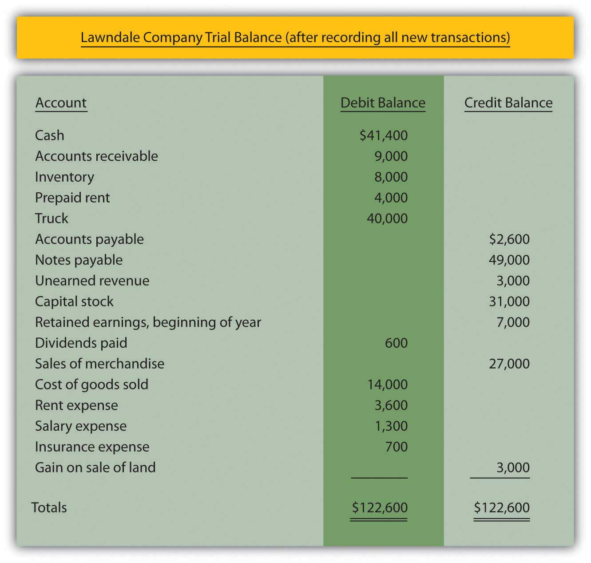

At the end of this section, students should be able to meet the following objectives:
Question: The first two steps of the accounting process were identified in Chapter 4 "How Does an Organization Accumulate and Organize the Information Necessary to Prepare Financial Statements? " as “analyze” and “record.” A transaction occurs and the financial effects are ascertained through careful analysis. Once determined, the impact an event has on specific accounts is recorded in the form of a journal entry. Each of the debits and credits is then posted to the corresponding T-account located in the ledger. As needed, current balances can be determined for any or all of these accounts by netting the debits and credits. It is a system as old as the painting of the Mona Lisa.
The third step in this process was listed as “adjust.” Why do ledger account balances require adjustment? Why are the T-account totals found in Figure 4.3 "Balances Taken From T-accounts in Ledger" not simply used by the accountant to produce financial statements for the reporting organization?
Answer: Financial events take place throughout the year. As indicated, journal entries are recorded with the individual debits and credits then entered into the proper T-accounts. However, not all changes in a company’s accounts occur as a result of physical events. Balances frequently increase or decrease simply because of the passage of time. Or the impact is so gradual that producing individual journal entries is not reasonable. For example, salary is earned by employees every day (actually every minute) but payment is not usually made until the end of the week or month. Other expenses, such as utilities, rent, and interest, are incurred over time. Supplies such as pens and envelopes are used up on an ongoing basis. Unless an accounting system is programmed to record tiny incremental changes, the financial effects are not captured as they occur.
Following each day of work, few companies take the trouble to record the equivalent amount of salary or other expense and the related liability. When a pad of paper is consumed within an organization, debiting supplies expense for a dollar or two and crediting supplies for the same amount hardly seems worth the effort.
Prior to producing financial statements, the accountant must search for all such changes that have been omitted. These additional increases or decreases are also recorded in a debit and credit format (often called adjusting entriesChanges in account balances recorded prior to making financial statements to update T-accounts because some amounts have increased or decreased gradually over time but not recorded through a normal journal entry. rather than journal entries) with the impact then posted to the appropriate ledger accounts. The process continues until all balances are properly stated. These adjustments are a prerequisite step in the preparation of financial statements. They are physically identical to journal entries recorded for transactions but they occur at a different time and for a different reason.
Link to multiple-choice question for practice purposes: http://www.quia.com/quiz/2092644.html
Question: Adjusting entries are used to update the ledger for any financial changes that have occurred gradually over time and not recorded through a regular journal entry. What kinds of adjustments are normally needed before financial statements are prepared?
Answer: A variety of adjusting entries will be examined throughout the remainder of this textbook. One of the accountant’s primary responsibilities is the careful study of all financial information to ensure that it is all fairly presented before being released. Such investigation can lead to the preparation of numerous adjusting entries. Here, in Chapter 5 "Why Must Financial Information Be Adjusted Prior to the Production of Financial Statements?", only the following four general types of adjustments are introduced. In later chapters, many additional examples will be described and analyzed.
Usually, at the start of the adjustment process, the accountant prepares an updated trial balance to provide a visual, organized representation of all ledger account balances. This listing aids the accountant in spotting figures that might need adjusting in order to be fairly presented. Therefore, Figure 5.1 "Updated Trial Balance" takes the ending account balances for the Lawndale Company found in the ledger presented in Figure 4.3 "Balances Taken From T-accounts in Ledger" and puts them into the form of a trial balance.
Figure 5.1 Updated Trial Balance

Question: The first adjustment listed is an accrued expenseExpenses (and the related liabilities) that grow gradually over time; impact is recorded prior to preparing financial statements by means of an adjusting entry to update both accounts.. In Chapter 4 "How Does an Organization Accumulate and Organize the Information Necessary to Prepare Financial Statements? ", the word “accrue” was defined as “to grow.” Thus, an accrued expense is one that increases gradually over time. As indicated previously, some companies program their accounting systems to record such expenses as they are incurred. This accrual process reduces the need for separate adjusting entries. Other companies make few, if any, accruals and update all balances through numerous adjustments. The recording process for such expenses should be designed to meet the informational needs of company officials. Some prefer to have updated balances readily available in the ledger while others are inclined to wait for periodic financial reports to be issued. What are some typical accrued expenses and what is the appropriate adjusting entry if they have not been previously recorded by the accounting system?
Answer: If a reporting company’s accounting system recognizes an expense as it grows, no adjustment is necessary. The balances are recorded properly. They are ready to be included in financial statements. Thus, when statements are prepared, the accountant only needs to search for accrued expenses that have not yet been recognized.
Numerous expenses do get slightly larger each day until paid, including salary, rent, insurance, utilities, interest, advertising, income taxes, and the like. For example, on its December 31, 2008, balance sheet, the Hershey Company reported accrued liabilities of approximately $504 million. In the notes to the financial statements, this amount was explained as debts owed on that day for payroll, compensation and benefits, advertising and promotion, and other accrued expenses.
Assume, for illustration purposes, that the accountant reviews the trial balance presented in Figure 5.1 "Updated Trial Balance" and realizes that utility expenses (such as electricity and water) have not been recorded since the most recent payment. Assume that the Lawndale Company currently owes $900 for those utilities. The following adjustment is needed before financial statements are created. It is an adjusting entry because no physical event took place; this liability simply grew over time and has not yet been paid.
Figure 5.2 Adjusting Entry 1: Amount Owed for Utilities
Link to multiple-choice question for practice purposes: http://www.quia.com/quiz/2092630.html
Adjusting entries are necessary to update all account balances before financial statements can be prepared. These adjustments are not the result of physical events or transactions but are rather caused by the passage of time or small changes in account balances. The accountant examines a current listing of accounts—known as a trial balance—to identify amounts that need to be changed prior to the preparation of financial statements. Although numerous adjustments are studied in this textbook, four general types are especially common: accrued expenses, prepaid expenses, accrued revenues, and unearned revenues. Any expense (such as salary) that grows gradually over time but has not yet been paid is known as an accrued expense. If not automatically recorded by the accounting system, it must be entered into the records by adjustment prior to producing financial statements.